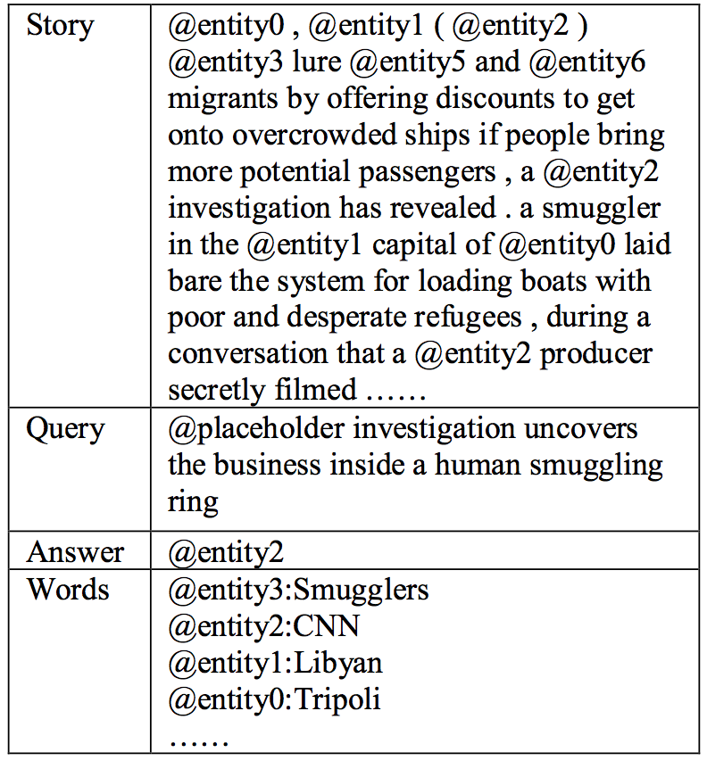
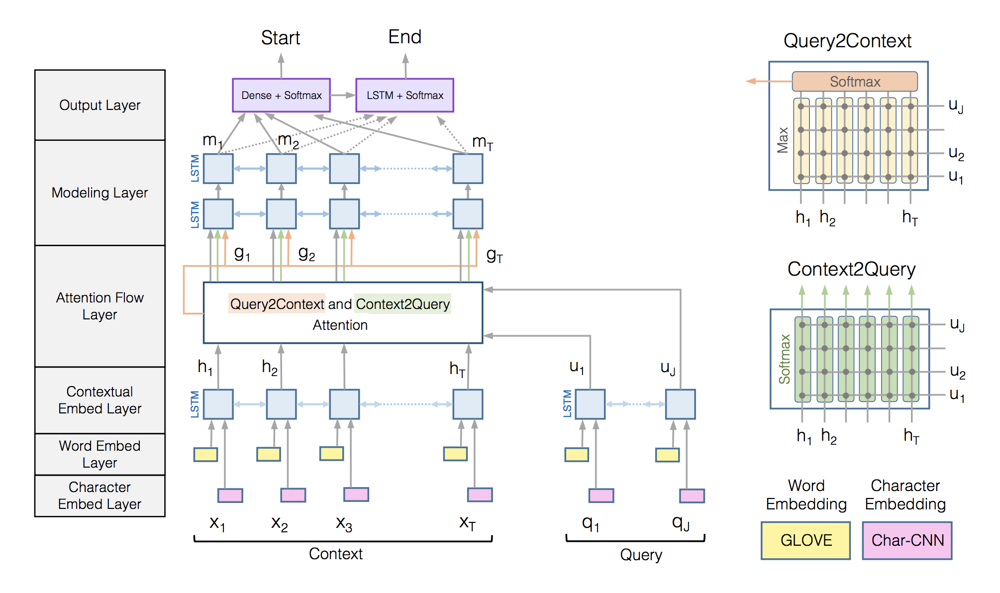
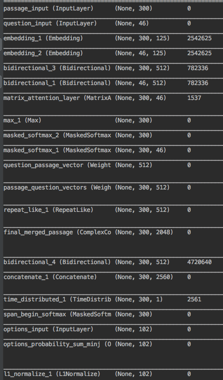
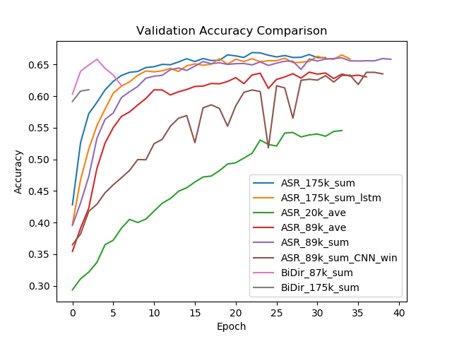

Question Answering is becoming more and more popular in recent years, while statistical and neural network models have been implemented in this NLP task, advanced sequential models like LSTM and attention based network reached the highest performance. This paper reimplemented those state-of-art machine learning architectures, including Attention Sum reader model (Rudolf Kadlec and Kleindienst, 2016) and Bi-directionally Attention Flow models by (Seo et al., 2017) on CNN dataset. The goal is to compare those models' performance on different scale of the dataset and try different vector representation methods. Our baseline model - logistic regression achieved 41% accuracy, while the best deep learning approach achieved 67.2% accuracy using 175,000 training data with option sum reader model.
Data Pre-Processing
Before we start introduce the data processing method we used for this task, we need to first introduce CNN dataset released by Google DeepMind (download here) first as most researchers use SQuAD dataset nowadays. This dataset focuses on the noun entity recognition. One interesting attribute of this dataset is that it anonymized the noun entities (e.g. @entity01) to force the model to learn from the context instead of the entity itself. Also, the news stories provide more sufficient background information compared with other dataset such as SQuAD, which normally contains only several sentences.
 An example of CNN dataset- Truncating
We truncated each news to a fixed length of 300 words, and each questions to 46 words long. We also filtered training data if the answer not show up in the 300 words length.
- Embeddings
For the deep learning models, we used pre-trained GloVe 100-dimension word embedding for general words and character embeddings to represent entities because entity nouns have no representations in Glove. For entities representations, we tried two different approaches and compared their performance. One is to use Word2Vec to train another 25-dimension character embedding on our train set, and take average of the character embedding to represent a word. Another approach is to use CNN to extract features during training (@ Kim et al.(2016) .
For CNN, each word is truncated or padded into 15 characters, and we applied 1D filters 3, 4, 5 to learn different lengths of characters. We used concatenated max pooling results to represent a word.
We kept top 20,000 words and label the rest of words as 'UNK'. Similarly, we have 'UNK entities'. Since we used character embedding for entities, for example, 'entity 1' will have character embeddings for 'e','n'.. till '1', and we average each character's embedding values to create it's final 'character embedding' values. We also tried using CNN to extract character-level features, however we give up this method because it does not work fundamentally different with original concatenate embedding method and it causes extra time to train the model.
Bi-Directional Attention Flow Model Details
 Original Model referenced directly from Seo et al., 2017After data preprocessing, the next step we used two bidirectional LSTM with input from word and character embedding layer on story and queries to create contextual embeddings from LSTM's hidden states.(We obtained H hidden states values for context words and U hidden states values for queries word.) Similar to embedding layer, this contextual embedding layer is still encoding words according to their context in order to better suit for longer text representation.
We then encoded our feature vectors with the similarity matrix between the context and query as attention vectors, then we combined the contextual embedding vectors which captures the context word interactions,with this attention vectors, where context words interactions with queries have been encoded, we can have each column vector in this combine vectors have corresponding query-aware weights for each context word.
In the end, we used another two bidirectional LSTMs with inputs from our attention layer, thus we can get each context word representations conditioned on current query and on it's current story.
Finally, we need an output layer to predict which entity is the correct answer. Although it's easy to implement a softmax layer in order to predict every word probability of being the desire answer, since we only care about which options is the correct answer, thus we added a masking layer called option layer, where we only input entities' character embeddings values. Thus we ended up having only each options' probabilities in the last step. Because each entity may appear multiple times, we sum up or average each entities probabilities in every location as their final probabilities and then use L1 normalization method to normalize them as output. Thus the cost of this model is each entities probabilities with their corresponding labels.

Summary of Final ModelResults
Notice that although we explained Bi-Directional Attention Flow model in a great detail, we actually received better performance by a simpler version of the Bi-Directional Attention model. The main reason is that our limited computer resources fail to train the model on all data, and the small amount of data we have now leads to over-fitting issues after few rounds of epochs.
Here, we examined the models, accompanied with different tunning parameters and embedding structures, including:
 Final Result of two models with different parameters1) Training size of 13,700 versus training size of 89,000 versus training size of 175,000.
2) Word2Vec character-level embedding versus CNN character-level embedding.
3) Sum versus average method to calculate probabilities for each entity
4) LSTM model versus GRU model.
We found that Attention Sum reader with 175,000 training data have the highest validation and test accuracy.Discussion
As one of the challenges of question answering system is long text understanding and captures the relationship between stories between queries, thus the main goal of this is to implement the state-of-art attention models, and consider it’s reliability in different task.
We compared time cost, model complexity cost with final model accuracy on both validation dataset and test dataset. We concluded that although Bidirectional Attention Flow may receive higher accuracy, but it requires 12 hours for one epoch on a 89,000 dataset, and thus is as not applicable as attention sum reader, where it can train one epoch using only around 40 minutes, and reached 66.9% accuracy after 34 epochs using only 89,000 training data.
We also observe that there is a slightly difference when calculating entities probabilities in news using sum method or average method. When using a small model like attention sum reader with only one layer of GRU, sum method converges quickly and part of the reason is that in CNN dataset, entities appeared frequently have higher probabilities of being selected as the correct answers. While for bidirectional attention flow model, if we use sum method it will have over-fitting problems after 5 epochs, and we found train accuracy reaches around 80% of accuracy while validation accuracy drops to 62% of accuracy. Thus we use mean attention reader method for our bidirectional attention flow model and used sum method for our simpler model
Other things you could try beyond this paper is to split each stories into sentences that centered on entities and create n words context window for every entity appeared in this story. The advantage is that research have found this method captures most information of entities contexts compare to 300 words stories representation. The disadvantage is that this would also boost training examples size dramatically.
----END---
More Code and content about this paper, please refer to Here
Special Thanks to @ Allen AI of their fantastic code for main matrix calculations functions in this paper.